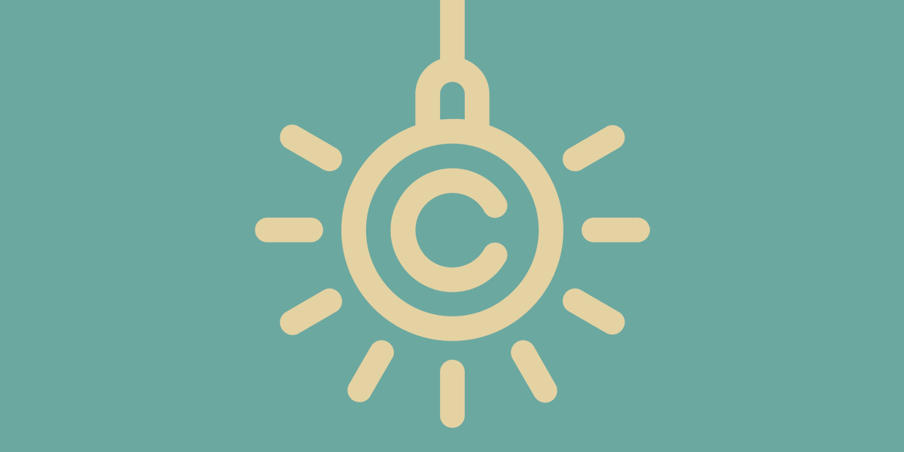
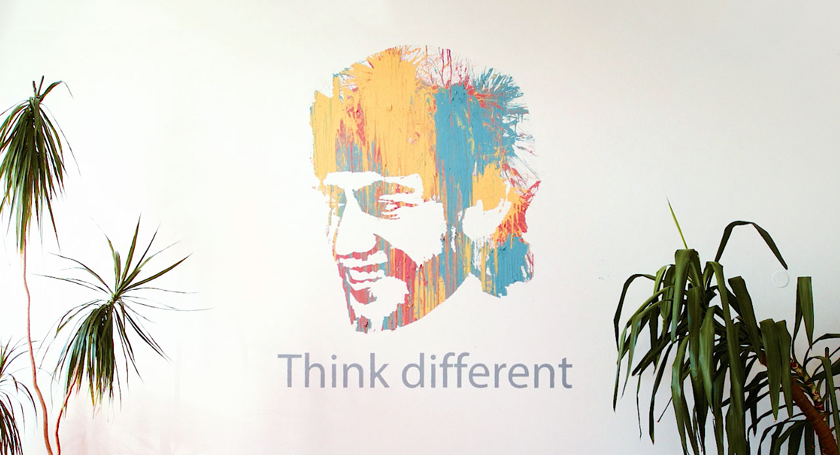

24. 11. 2016
Včeraj (23. novembra 2016) dopoldne smo prejeli ogorčen in z grožnjami začinjen klic fotografa g. Srdjana Živulovića, ki nas je opozoril, da smo na spletnem mestu Agrument njegove fotografije objavili brez dovoljenja. Pod objavami je bil sicer naveden vir, a pravno gledano tovrsten zapis ne zadošča in ne opravičuje našega dejanja. Fotografije smo brž umaknili s spleta, se opravičili avtorju in brez pomislekov pristali na njegovo zahtevo, da poravnamo račun.
Danes je nov dan je neprofitna organizacija, ki ustvarja angažirane civilnodružbene vsebine. Verjamemo v odprtost informacij, podatkov in ponovno uporabo avtorskih materialov z navedbo vira. Eno od področij, kjer delujemo, je boj za ponoven premislek problematike avtorskega prava v smeri razumevanja specifike digitalnih medijev in licenc, ki avtorjem omogočajo pridobivanje dodatne publike in promocije, ne da bi se ob internetni popularnosti počutili izrabljeni.
Zavedamo se sistemskih okoliščin, ki ustvarjalce pogosto postavljajo v prekaren in od medijskih hiš odvisen položaj, zato razumemo stisko in reakcijo g. Živulovića. Menimo, da je trenutna zakonodaja, ki ureja avtorsko pravo, neprimerna. Podpiramo kreativno delo in menimo, da bi morali biti vsi avtorji primerno in pravično prepoznani in kompenzirani. Trenutni sistem intelektualne lastnine privilegira peščico velikih korporacij v monopolnem položaju: od patentov na zdravila pa vse do Sazasa. Patenti in intelektualna lastnina ščitijo močne, tudi (in predvsem) na račun revnih, prekarnih, majhnih.
Mnogo piscev tekstov, avtorjev, fotografov in ilustratorjev životari v nestabilnih delovnih razmerjih, medtem ko so po podatkih raziskave iz 2013 podjetja, ki primarno temeljijo na aktivnostih, ki so povezane z intelektualno lastnino, ena najbolj dobičkonosnih. Naj vas ne zmoti dejstvo, da gre za tujo raziskavo. Naša pozicija na obrobju globalnega Severa nam dovoli kvečjemu, da se prodamo tujim, večjim medijem, kakor opozarja tudi avtor sporne fotografije sam.
Projekt Agrument ustvarja več kot 10 sodelavcev, za opravljeno delo pa nihče ni honoriran niti poimenovan. Gre za popolnoma prostovoljen, avtonomen, od kakršnih koli financerskih interesov neodvisen projekt, ki vsebine postavlja pred imena. Ravno zaradi tovrstne DIY drže zmore vzdrževati kritično ost do vsakogar. Na spletnem mestu ne prikazujemo oglasov, na steni naše pisarne pa je freska Aarona Swartza, enega od avtorjev licence cc, aktivista in borca za odprte podatke. Naša lastna avtorska politika sledi etiki in duhu, ki ju je poosebljal prav Swartz. Vse naše vsebine so ponujene v neomejeno nadaljnjo rabo, isto velja za kodo, ki poganja naše spletno mesto in druge spletne projekte in isto bo veljalo za Parlameter.
Kdor dela, greši. Nas je zavedel idealizem: ker smo večino časa obdani z ustvarjalci s podobnimi življenjskimi nazori in ker delujemo znotraj generacije, ki interneta ne razume zgolj kot monetizacijsko platformo ali medijsko orodje, temveč kot življenjski prostor, smo pozabili, da obstaja svet onkraj našega mehurčka. Delujemo v okoljih, v katerih nam odpiranje lastnih podatkov, informacij in avtorskih rešitev v ničemer ne škoduje, ampak kvečjemu odpira vrata in omogoča kvalitetne vsebinske in poslovne vezi.
Trdno smo prepričani, da je vsak kreativen proces kumulativen in le če je znanje prosto dostopno, lahko pripelje do več in boljšega znanja. Povod za dogodke je bil, da nismo prosili za dovoljenje za uporabo fotografije v članku, ki problematizira begunsko krizo. In vendar, ljudi na fotografiji najbrž tudi nihče ni vprašal, ali želijo biti fotografirani in krasiti razne za ali proti naslovnice svetovnih medijev. Nikogar ne briga, ali želijo biti senzacionalizirani in predstavljati objekt našega zgražanja ali pomilovanja. In vsekakor niso bili nikakor prepoznani ali celo kompenzirani. Vsaka šola nekaj stane, ampak ker smo piflarji, bomo iz nje potegnili kar največ.
Vsem avtorjem, ki se počutijo podobno zlorabljene, se opravičujemo za svojo civilno nepokorščino in hipijevsko naivno držo. Opravičujemo se tudi, da nikogar nismo vprašali za mnenje oziroma dovoljenje.
Apeliramo na vse s Pulitzerjem (ne)ozaljšane fotografe in fotografinje, medijske hiše, posameznike in posameznice ter njihove pametne telefone, da se nam oglasijo z eksplicitnim dovoljenjem, da fotografije, objavljene na njihovih spletnih straneh, lahko uporabimo za namen vizualne popestritve avtorskih agrumentov. Naša praksa objavljanja vključuje navedbo vira ter povezavo do izvirne objave. Trenutno je Agrument vizualno osiromašen, saj je bil naš jutranji sogovornik tako jezen, bojevit in poln groženj, da smo za vsak slučaj kar vse fotografije zamenjali s pasico DJND.
Tukaj bomo sproti izpisovali imena vseh fizičnih in pravnih oseb, ki nam bodo v okviru projekta Agrument v brezplačno nekomercialno rabo ponudile svoja fotografska dela, ilustracije in druge vizualne materiale.
Na vsi@danesjenovdan.si se nam prosim oglasite skupaj s povezavami do spletnega mesta, iz katerega nam dovoljujete pobirati fotografije. Pa hvala, ker nam pomagate še naprej verjeti v skupnost. <3
Dodajte me na mailing listo.